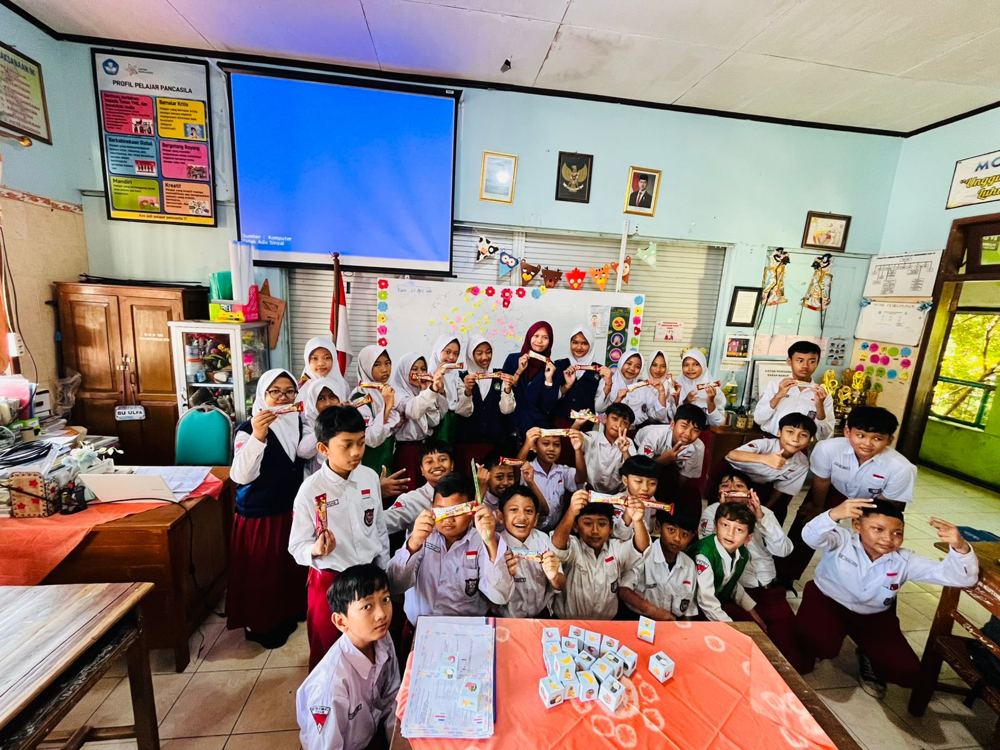

ARTEFAK PEMBELAJARAN
Dokumentasi kegiatan pembelajaran Program Pendidikan Profesi Guru (PPG) yang dilaksanakan melalui berbagai siklus pembelajaran inovatif dengan model Problem Based Learning (PBL).

Siklus 1
Dokumentasi kegiatan pembelajaran pada siklus 1 materi Matematika tentang Analisis Data dan Peluang.
Peserta didik belajar mengurutkan, membandingkan, menyajikan, dan menganalisis data dalam bentuk gambar, piktogram, diagram batang, dan tabel frekuensi untuk memperoleh informasi.
Pembelajaran menggunakan model Problem Based Learning (PBL) dengan metode diskusi kelompok, observasi, tanya jawab, presentasi, dan penugasan. Konteks Pembelajaran Siklus I Pada pelaksanaan Siklus I, pembelajaran Matematika dilaksanakan dengan materi Analisis Data dan Peluang. Peserta didik belajar mengurutkan, membandingkan, menyajikan, dan menganalisis data melalui gambar, piktogram, diagram batang, dan tabel frekuensi untuk memperoleh informasi yang bermakna. Pembelajaran dilaksanakan menggunakan model Problem Based Learning (PBL) yang berpusat pada peserta didik. Dalam proses pembelajaran, guru memberikan permasalahan kontekstual yang berkaitan dengan data di lingkungan sekitar peserta didik. Selanjutnya peserta didik bekerja dalam kelompok untuk melakukan pengamatan, mengolah data, berdiskusi, mempresentasikan hasil, serta menarik kesimpulan bersama. Metode yang digunakan meliputi diskusi kelompok, observasi, tanya jawab, presentasi, dan penugasan. Penggunaan metode tersebut bertujuan untuk meningkatkan keterlibatan aktif peserta didik serta melatih kemampuan berpikir kritis dan kerja sama dalam menyelesaikan masalah. Tujuan Pembelajaran Siklus I Tujuan pembelajaran pada Siklus I yaitu: Peserta didik mampu mengurutkan dan membandingkan data dengan benar. Peserta didik mampu menyajikan data dalam bentuk gambar, piktogram, diagram batang, dan tabel frekuensi. Peserta didik mampu menganalisis data sederhana untuk memperoleh informasi. Peserta didik mampu bekerja sama dalam kelompok melalui kegiatan diskusi. Peserta didik mampu menyampaikan hasil analisis data melalui presentasi sederhana. Secara teoritis, tujuan tersebut sejalan dengan pendapat Jean Piaget yang menyatakan bahwa peserta didik usia sekolah dasar berada pada tahap operasional konkret, sehingga pembelajaran akan lebih bermakna apabila menggunakan benda nyata, gambar, dan aktivitas langsung dalam mengolah data. Kelebihan Pembelajaran Siklus I Berdasarkan Kajian Teori 1. Pembelajaran Berpusat pada Peserta Didik Model PBL memberikan kesempatan kepada peserta didik untuk aktif mencari dan menemukan solusi terhadap masalah yang diberikan. Menurut John Dewey, pembelajaran yang melibatkan pengalaman langsung dapat meningkatkan pemahaman dan kemampuan berpikir peserta didik. 2. Meningkatkan Kemampuan Berpikir Kritis Peserta didik dilatih mengumpulkan, membandingkan, dan menganalisis data sehingga kemampuan berpikir kritis berkembang. Hal ini sesuai teori konstruktivisme Lev Vygotsky yang menekankan pentingnya interaksi sosial dan diskusi dalam membangun pengetahuan. 3. Melatih Kerja Sama dan Komunikasi Kegiatan diskusi dan presentasi kelompok membantu peserta didik belajar bekerja sama, bertukar pendapat, serta berani menyampaikan hasil pekerjaan di depan kelas. 4. Materi Lebih Mudah Dipahami Penggunaan gambar, piktogram, diagram batang, dan tabel frekuensi membantu peserta didik memahami konsep data secara konkret dan visual sehingga pembelajaran menjadi lebih menarik. 5. Pembelajaran Kontekstual Permasalahan yang dekat dengan kehidupan sehari-hari membuat peserta didik lebih mudah memahami manfaat materi analisis data dalam kehidupan nyata. Kekurangan Pembelajaran Siklus I Berdasarkan Kajian Teori 1. Sebagian Peserta Didik Masih Pasif Dalam kegiatan diskusi kelompok, masih terdapat beberapa peserta didik yang kurang aktif dan cenderung bergantung pada teman yang lebih dominan. Hal ini menunjukkan keterampilan kolaborasi peserta didik belum berkembang secara optimal. 2. Pengelolaan Waktu Belum Efektif Model PBL membutuhkan waktu yang cukup panjang karena terdapat tahap orientasi masalah, diskusi, pengumpulan data, presentasi, dan refleksi. Akibatnya beberapa kegiatan belum terlaksana secara maksimal. 3. Kemampuan Analisis Data Masih Rendah Sebagian peserta didik masih mengalami kesulitan dalam membaca diagram batang dan menentukan informasi dari tabel frekuensi sehingga memerlukan bimbingan guru secara lebih intensif. 4. Presentasi Belum Maksimal Masih ada peserta didik yang kurang percaya diri saat menyampaikan hasil diskusi di depan kelas. Menurut teori belajar sosial Albert Bandura, rasa percaya diri berkembang melalui latihan dan penguatan secara terus-menerus. 5. Ketergantungan pada Arahan Guru Pada tahap awal penerapan PBL, peserta didik masih memerlukan banyak arahan dari guru dalam memahami langkah-langkah penyelesaian masalah. Kesimpulan Kajian Siklus I Berdasarkan artefak pembelajaran Siklus I, penerapan model PBL pada materi Analisis Data dan Peluang mampu meningkatkan keaktifan, kemampuan berpikir kritis, serta kerja sama peserta didik dalam memahami penyajian dan analisis data. Namun demikian, masih ditemukan beberapa kendala seperti pengelolaan waktu, partisipasi peserta didik yang belum merata, dan kemampuan analisis data yang masih perlu ditingkatkan. Oleh karena itu, diperlukan perbaikan pada Siklus II melalui penggunaan media yang lebih menarik, pendampingan yang lebih intensif, serta pengelolaan kelompok yang lebih efektif agar hasil pembelajaran menjadi lebih optimal.

Siklus 2
Dokumentasi kegiatan pembelajaran pada siklus 2 materi Matematika tentang Analisis Data dan Peluang.
Peserta didik belajar menyajikan dan menganalisis data melalui kegiatan interaktif menggunakan media pembelajaran dan permainan edukatif berupa dadu.
Pembelajaran menggunakan model Problem Based Learning (PBL) dengan metode diskusi kelompok, observasi, presentasi, tanya jawab, dan penugasan.

Hasil Kerja Peserta Didik
Dokumentasi hasil kerja peserta didik selama proses pembelajaran yang menunjukkan kemampuan dalam memahami materi, menyelesaikan tugas, dan mengembangkan keterampilan berpikir kritis.
Hasil kerja siswa menjadi salah satu indikator keberhasilan pembelajaran serta bahan refleksi untuk meningkatkan kualitas proses belajar mengajar.